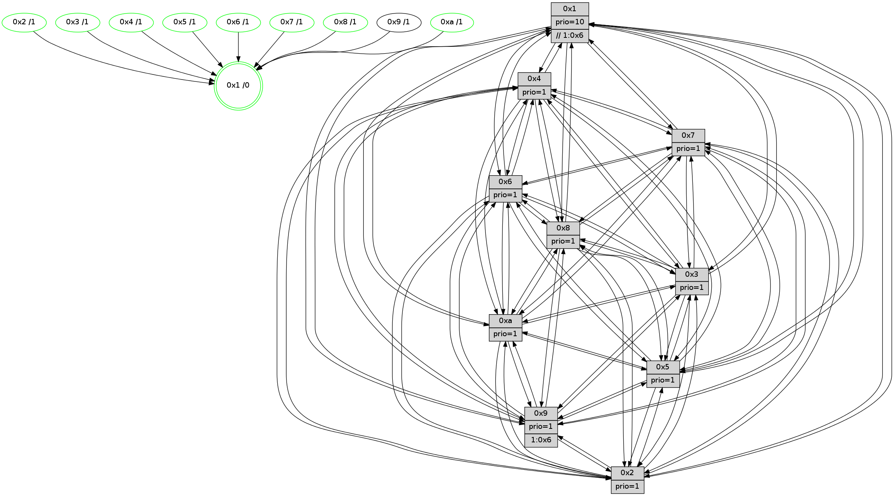

>> << IDX [start] -100 -25 -5 +0 +5 +25 +100 [1160.557374]
 Previous packets
----------------------------------------------------------------------
1155.040458 beacon01(faad) #0 coord=01,02,03,04,05,06,07,0a,09,08 cycle=688.0ms assoc
-- color-indic=1 64 3f f9
1155.050439 beacon02(faad) #0 coord=01,02,03,04,05,06,07,0a,09,08 cycle=688.0ms assoc 64 ac c8
1155.060441 beacon03(faad) #0 coord=01,02,03,04,05,06,07,0a,09,08 cycle=688.0ms assoc 64 d6 85
1155.070442 beacon04(faad) #0 coord=01,02,03,04,05,06,07,0a,09,08 cycle=688.0ms assoc 64 a1 6f
1155.080441 beacon05(faad) #0 coord=01,02,03,04,05,06,07,0a,09,08 cycle=688.0ms assoc 64 db 22
1155.090440 beacon06(faad) #0 coord=01,02,03,04,05,06,07,0a,09,08 cycle=688.0ms assoc 64 55 f5
1155.100441 beacon07(faad) #0 coord=01,02,03,04,05,06,07,0a,09,08 cycle=688.0ms assoc 64 2f b8
1155.110446 beacon0a(faad) #0 coord=01,02,03,04,05,06,07,0a,09,08 cycle=688.0ms assoc 64 5e b3
1155.120446 beacon09(faad) #0 coord=01,02,03,04,05,06,07,0a,09,08 cycle=688.0ms assoc 64 d0 64
1155.130446 beacon08(faad) #0 coord=01,02,03,04,05,06,07,0a,09,08 cycle=688.0ms assoc 64 aa 29
1155.141946 [Hello(9): seq=681 sym=2,5,3,4,7,6,8,10,1 sysInfo=hasWarning stat=2:2,0,11,8/5:11,4,10,5/3:5,9,1,15/4:4,3,0,0/7:11,10,2,1/6:2,6,8,11/8:8,14,14,3/10:13,7,2,4/1:3,15,13,1]
1155.144991 [Color(5) seq=331 @0:0 prio=1]
1155.146448 [Color(1) seq=418 @0:0 prio=10 >>1.@6,1.@7,1.@8]
1155.149548 [Hello(4): seq=737 sym=5,7,6,2,3,9,8,10,1 sysInfo= stat=5:9,3,14,15/7:11,9,3,1/6:14,12,1,12/2:15,0,10,14/3:10,8,1,11/9:15,13,6,11/8:13,1,0,6/10:11,6,10,13/1:14,0,12,1]
1155.153644 [Color(4) seq=294 @0:0 prio=1]
1155.155661 [Hello(7): seq=737 sym=2,3,5,6,4,8,9,10,1 sysInfo=hasWarning stat=2:4,7,10,1/3:8,14,9,15/5:10,7,4,1/6:5,2,6,9/4:3,14,4,1/8:11,5,13,1/9:6,1,8,1/10:15,5,11,5/1:6,9,12,0]
1155.158616 [Hello(8): seq=681 sym=5,2,3,4,9,6,7,10,1 sysInfo=hasWarning stat=5:2,13,3,0/2:13,13,1,10/3:6,2,4,15/4:11,1,7,10/9:15,7,7,3/6:4,15,2,13/7:12,11,2,0/10:14,6,9,4/1:5,11,12,0]
1155.161082 [Hello(10): seq=670 sym=6,2,3,8,7,5,9,4,1 sysInfo=hasWarning stat=6:13,11,2,6/2:11,4,3,10/3:12,1,7,11/8:1,14,10,2/7:0,1,1,6/5:5,1,12,14/9:4,15,3,2/4:10,3,2,0/1:4,4,7,1]
1155.164436 [Color(8) seq=336 @0:0 prio=1]
1155.168683 [Color(7) seq=283 @0:0 prio=1]
----------------------------------------------------------------------
1155.828589 beacon01(faad) #0 coord=01,02,03,04,05,06,07,0a,09,08 cycle=688.0ms assoc
-- color-indic=1 64 0b e1
1155.838572 beacon02(faad) #0 coord=01,02,03,04,05,06,07,0a,09,08 cycle=688.0ms assoc 64 98 d0
1155.848572 beacon03(faad) #0 coord=01,02,03,04,05,06,07,0a,09,08 cycle=688.0ms assoc 64 e2 9d
1155.858571 beacon04(faad) #0 coord=01,02,03,04,05,06,07,0a,09,08 cycle=688.0ms assoc 64 95 77
1155.868573 beacon05(faad) #0 coord=01,02,03,04,05,06,07,0a,09,08 cycle=688.0ms assoc 64 ef 3a
1155.878572 beacon06(faad) #0 coord=01,02,03,04,05,06,07,0a,09,08 cycle=688.0ms assoc 64 61 ed
1155.888573 beacon07(faad) #0 coord=01,02,03,04,05,06,07,0a,09,08 cycle=688.0ms assoc 64 1b a0
1155.898577 beacon0a(faad) #0 coord=01,02,03,04,05,06,07,0a,09,08 cycle=688.0ms assoc 64 6a ab
1155.908578 beacon09(faad) #0 coord=01,02,03,04,05,06,07,0a,09,08 cycle=688.0ms assoc 64 e4 7c
1155.918578 beacon08(faad) #0 coord=01,02,03,04,05,06,07,0a,09,08 cycle=688.0ms assoc 64 9e 31
1155.930728 [Hello(5): seq=738 sym=7,6,4,3,1,9,8,10,2 sysInfo=hasWarning stat=7:14,7,6,13/6:12,13,9,2/4:13,0,14,13/3:15,9,15,13/1:7,1,0,1/9:0,0,0,9/8:11,11,10,2/10:2,8,14,8/2:10,11,0,6]
1155.934410 [Hello(1): seq=647 sym=4,2,9,5,10,3,8,6,7 sysInfo=coloring-mode-on,ColoringModeRequestCalled stat=4:2,14,1,5/2:2,2,4,2/9:1,2,2,7/5:14,1,10,7/10:8,11,9,6/3:5,4,13,6/8:1,10,13,3/6:2,7,5,13/7:2,13,15,14]
1155.937222 [STC(1) #0.178 tree-change,inconsistent-stability,stable,to-color d=0]
1155.938771 [Hello(6): seq=738 sym=2,3,5,4,7,9,8,10,1 sysInfo=hasWarning stat=2:10,0,2,7/3:10,0,14,11/5:1,6,15,1/4:15,6,9,5/7:1,13,4,12/9:3,0,4,7/8:3,1,14,5/10:11,15,4,12/1:10,15,13,1]
1155.942562 [Color(6) seq=370 @0:0 prio=1]
1155.944279 [Hello(3): seq=738 sym=1,7,6,2,4,8,9,10,5 sysInfo=hasWarning stat=1:3,13,10,0/7:3,14,12,12/6:3,9,1,0/2:1,4,2,0/4:15,13,15,11/8:15,10,9,4/9:14,8,3,13/10:5,3,12,4/5:2,3,6,15]
1155.948176 [Color(10) seq=327 @0:0 prio=1]
1155.950093 [Color(3) seq=367 @0:0 prio=1]
1155.952410 [Hello(2): seq=734 sym=4,5,7,6,3,9,8,10,1 sysInfo=hasWarning stat=4:10,15,4,11/5:7,15,10,0/7:4,11,5,14/6:4,10,12,11/3:12,6,11,8/9:4,8,14,6/8:15,15,4,11/10:15,2,1,10/1:10,6,9,0]
1155.955549 [Color(2) seq=314 @0:0 prio=1]
----------------------------------------------------------------------
1156.616721 beacon01(faad) #0 coord=01,02,03,04,05,06,07,0a,09,08 cycle=688.0ms assoc
-- color-indic=1 64 b7 e4
1156.626702 beacon02(faad) #0 coord=01,02,03,04,05,06,07,0a,09,08 cycle=688.0ms assoc 64 24 d5
1156.636703 beacon03(faad) #0 coord=01,02,03,04,05,06,07,0a,09,08 cycle=688.0ms assoc 64 5e 98
1156.646705 beacon04(faad) #0 coord=01,02,03,04,05,06,07,0a,09,08 cycle=688.0ms assoc 64 29 72
1156.656703 beacon05(faad) #0 coord=01,02,03,04,05,06,07,0a,09,08 cycle=688.0ms assoc 64 53 3f
1156.666704 beacon06(faad) #0 coord=01,02,03,04,05,06,07,0a,09,08 cycle=688.0ms assoc 64 dd e8
1156.676704 beacon07(faad) #0 coord=01,02,03,04,05,06,07,0a,09,08 cycle=688.0ms assoc 64 a7 a5
1156.686709 beacon0a(faad) #0 coord=01,02,03,04,05,06,07,0a,09,08 cycle=688.0ms assoc 64 d6 ae
1156.696709 beacon09(faad) #0 coord=01,02,03,04,05,06,07,0a,09,08 cycle=688.0ms assoc 64 58 79
1156.706710 beacon08(faad) #0 coord=01,02,03,04,05,06,07,0a,09,08 cycle=688.0ms assoc 64 22 34
1156.717937 [Hello(10): seq=671 sym=6,2,3,8,7,5,9,4,1 sysInfo=hasWarning stat=6:13,11,2,6/2:12,5,3,10/3:12,2,7,11/8:1,15,10,2/7:0,2,1,6/5:6,1,12,14/9:4,15,3,2/4:10,3,2,0/1:4,4,7,1]
1156.721774 [STC(5)->1 #0.178 tree-change,inconsistent-stability,stable,to-color d=1]
1156.725869 [STC(4)->1 #0.178 tree-change,inconsistent-stability,stable,to-color d=1]
1156.727225 [Color(1) seq=419 @0:0 prio=10 >>1.@6,1.@7,1.@8]
1156.729399 [Color(5) seq=332 @0:0 prio=1]
1156.730978 [STC(8)->1 #0.178 tree-change,inconsistent-stability,stable,to-color d=1]
1156.733926 [Hello(7): seq=738 sym=2,3,5,6,4,8,9,10,1 sysInfo=hasWarning stat=2:5,8,10,1/3:9,15,9,15/5:11,7,4,1/6:6,3,6,9/4:3,14,4,1/8:11,5,13,1/9:7,1,8,1/10:15,6,11,5/1:7,9,13,0]
1156.738462 [STC(7)->1 #0.178 tree-change,inconsistent-stability,stable,to-color d=1]
1156.741362 [Color(7) seq=284 @0:0 prio=1]
1156.745708 [Hello(9): seq=682 sym=2,5,3,4,7,6,8,10,1 sysInfo=hasWarning stat=2:3,1,11,8/5:12,5,10,5/3:6,10,1,15/4:5,4,0,0/7:12,11,2,1/6:3,7,8,11/8:9,15,14,3/10:14,8,2,4/1:4,0,14,1]
1156.748540 [STC(9)->1 #0.178 tree-change,inconsistent-stability,to-color d=1]
----------------------------------------------------------------------
1157.404850 beacon01(faad) #0 coord=01,02,03,04,05,06,07,0a,09,08 cycle=688.0ms assoc
-- color-indic=1 64 73 ea
1157.414833 beacon02(faad) #0 coord=01,02,03,04,05,06,07,0a,09,08 cycle=688.0ms assoc 64 e0 db
1157.424832 beacon03(faad) #0 coord=01,02,03,04,05,06,07,0a,09,08 cycle=688.0ms assoc 64 9a 96
1157.434832 beacon04(faad) #0 coord=01,02,03,04,05,06,07,0a,09,08 cycle=688.0ms assoc 64 ed 7c
1157.444833 beacon05(faad) #0 coord=01,02,03,04,05,06,07,0a,09,08 cycle=688.0ms assoc 64 97 31
1157.454834 beacon06(faad) #0 coord=01,02,03,04,05,06,07,0a,09,08 cycle=688.0ms assoc 64 19 e6
1157.464834 beacon07(faad) #0 coord=01,02,03,04,05,06,07,0a,09,08 cycle=688.0ms assoc 64 63 ab
1157.474839 beacon0a(faad) #0 coord=01,02,03,04,05,06,07,0a,09,08 cycle=688.0ms assoc 64 12 a0
1157.484839 beacon09(faad) #0 coord=01,02,03,04,05,06,07,0a,09,08 cycle=688.0ms assoc 64 9c 77
1157.494838 beacon08(faad) #0 coord=01,02,03,04,05,06,07,0a,09,08 cycle=688.0ms assoc 64 e6 3a
1157.507349 [Hello(1): seq=648 sym=4,2,9,5,10,3,8,6,7 sysInfo=coloring-mode-on,ColoringModeRequestCalled stat=4:2,15,1,5/2:3,3,4,2/9:2,2,3,7/5:14,2,10,7/10:9,12,9,6/3:6,5,13,6/8:1,10,14,3/6:3,8,5,13/7:3,14,0,14]
1157.509842 [Hello(5): seq=739 sym=7,6,4,3,1,9,8,10,2 sysInfo=hasWarning stat=7:15,8,7,13/6:13,14,9,2/4:14,1,14,13/3:0,10,15,13/1:8,1,1,1/9:1,0,1,9/8:11,11,11,2/10:3,9,14,8/2:11,12,0,6]
1157.513083 [Hello(2): seq=735 sym=4,5,7,6,3,9,8,10,1 sysInfo=hasWarning stat=4:11,0,5,11/5:8,0,11,0/7:5,12,6,14/6:4,10,12,11/3:12,6,11,8/9:5,8,15,6/8:15,15,5,11/10:0,2,1,10/1:10,7,9,0]
1157.515900 [Hello(3): seq=739 sym=1,7,6,2,4,8,9,10,5 sysInfo=hasWarning stat=1:3,14,10,0/7:4,15,13,12/6:3,9,1,0/2:2,5,2,0/4:15,13,0,11/8:0,11,10,4/9:15,8,4,13/10:6,3,12,4/5:3,4,7,15]
1157.518457 [Hello(6): seq=739 sym=2,3,5,4,7,9,8,10,1 sysInfo=hasWarning stat=2:11,1,2,7/3:11,1,14,11/5:2,7,0,1/4:15,6,10,5/7:2,14,5,12/9:4,0,5,7/8:4,2,15,5/10:12,0,4,12/1:10,0,13,1]
1157.521615 [Color(6) seq=371 @0:0 prio=1]
1157.524164 [Color(2) seq=315 @0:0 prio=1]
1157.526480 [Color(10) seq=328 @0:0 prio=1]
1157.536722 [Color(3) seq=368 @0:0 prio=1]
----------------------------------------------------------------------
1158.192980 beacon01(faad) #0 coord=01,02,03,04,05,06,07,0a,09,08 cycle=688.0ms assoc
-- color-indic=1 64 cf ef
1158.202963 beacon02(faad) #0 coord=01,02,03,04,05,06,07,0a,09,08 cycle=688.0ms assoc 64 5c de
1158.212964 beacon03(faad) #0 coord=01,02,03,04,05,06,07,0a,09,08 cycle=688.0ms assoc 64 26 93
1158.222963 beacon04(faad) #0 coord=01,02,03,04,05,06,07,0a,09,08 cycle=688.0ms assoc 64 51 79
1158.232964 beacon05(faad) #0 coord=01,02,03,04,05,06,07,0a,09,08 cycle=688.0ms assoc 64 2b 34
1158.242964 beacon06(faad) #0 coord=01,02,03,04,05,06,07,0a,09,08 cycle=688.0ms assoc 64 a5 e3
1158.252965 beacon07(faad) #0 coord=01,02,03,04,05,06,07,0a,09,08 cycle=688.0ms assoc 64 df ae
1158.262968 beacon0a(faad) #0 coord=01,02,03,04,05,06,07,0a,09,08 cycle=688.0ms assoc 64 ae a5
1158.272968 beacon09(faad) #0 coord=01,02,03,04,05,06,07,0a,09,08 cycle=688.0ms assoc 64 20 72
1158.282970 beacon08(faad) #0 coord=01,02,03,04,05,06,07,0a,09,08 cycle=688.0ms assoc 64 5a 3f
1158.294186 [Hello(10): seq=672 sym=6,2,3,8,7,5,9,4,1 sysInfo=hasWarning stat=6:13,11,2,6/2:12,5,3,10/3:12,3,7,11/8:2,0,11,2/7:1,3,2,6/5:6,2,13,14/9:5,15,4,2/4:10,3,3,0/1:5,5,7,1]
1158.300660 [Hello(9): seq=683 sym=2,5,3,4,7,6,8,10,1 sysInfo=hasWarning stat=2:4,2,11,8/5:13,5,10,5/3:7,11,1,15/4:5,4,0,0/7:12,11,2,1/6:4,8,8,11/8:9,15,14,3/10:14,9,2,4/1:5,0,14,1]
1158.305097 [Hello(8): seq=683 sym=5,2,3,4,9,6,7,10,1 sysInfo=hasWarning stat=5:4,13,3,0/2:15,15,1,10/3:8,4,4,15/4:11,1,7,10/9:1,7,8,3/6:6,1,2,13/7:12,13,3,0/10:15,8,9,4/1:7,11,13,0]
1158.307797 [Hello(7): seq=739 sym=2,3,5,6,4,8,9,10,1 sysInfo=hasWarning stat=2:6,9,10,1/3:10,0,9,15/5:12,7,4,1/6:7,4,6,9/4:3,14,4,1/8:11,5,13,1/9:8,1,9,1/10:0,7,11,5/1:8,9,13,0]
1158.310641 [Color(7) seq=285 @0:0 prio=1]
1158.312180 [Color(4) seq=296 @0:0 prio=1]
1158.314144 [Color(8) seq=338 @0:0 prio=1]
----------------------------------------------------------------------
1158.981112 beacon01(faad) #0 coord=01,02,03,04,05,06,07,0a,09,08 cycle=688.0ms assoc
-- color-indic=1 64 db 81
1158.991094 beacon02(faad) #0 coord=01,02,03,04,05,06,07,0a,09,08 cycle=688.0ms assoc 64 48 b0
1159.001094 beacon03(faad) #0 coord=01,02,03,04,05,06,07,0a,09,08 cycle=688.0ms assoc 64 32 fd
1159.011095 beacon04(faad) #0 coord=01,02,03,04,05,06,07,0a,09,08 cycle=688.0ms assoc 64 45 17
1159.021094 beacon05(faad) #0 coord=01,02,03,04,05,06,07,0a,09,08 cycle=688.0ms assoc 64 3f 5a
1159.031094 beacon06(faad) #0 coord=01,02,03,04,05,06,07,0a,09,08 cycle=688.0ms assoc 64 b1 8d
1159.041095 beacon07(faad) #0 coord=01,02,03,04,05,06,07,0a,09,08 cycle=688.0ms assoc 64 cb c0
1159.051100 beacon0a(faad) #0 coord=01,02,03,04,05,06,07,0a,09,08 cycle=688.0ms assoc 64 ba cb
1159.061101 beacon09(faad) #0 coord=01,02,03,04,05,06,07,0a,09,08 cycle=688.0ms assoc 64 34 1c
1159.071100 beacon08(faad) #0 coord=01,02,03,04,05,06,07,0a,09,08 cycle=688.0ms assoc 64 4e 51
1159.082946 [Hello(5): seq=740 sym=7,6,4,3,1,9,8,10,2 sysInfo=hasWarning stat=7:0,9,7,13/6:14,15,9,2/4:14,2,14,13/3:1,11,15,13/1:8,1,1,1/9:2,0,1,9/8:12,12,11,2/10:4,10,14,8/2:12,13,0,6]
1159.087681 [Color(10) seq=329 @0:0 prio=1]
1159.090221 [Hello(3): seq=740 sym=1,7,6,2,4,8,9,10,5 sysInfo=hasWarning stat=1:4,15,10,0/7:5,0,13,12/6:3,9,1,0/2:2,5,2,0/4:15,13,0,11/8:1,12,10,4/9:0,8,4,13/10:7,3,12,4/5:4,5,7,15]
1159.092663 [Hello(2): seq=736 sym=4,5,7,6,3,9,8,10,1 sysInfo=hasWarning stat=4:12,1,5,11/5:8,0,11,0/7:6,13,6,14/6:4,10,12,11/3:12,7,11,8/9:6,8,15,6/8:0,0,5,11/10:1,3,1,10/1:11,7,9,0]
1159.096765 [Color(2) seq=316 @0:0 prio=1]
1159.099113 [Hello(6): seq=740 sym=2,3,5,4,7,9,8,10,1 sysInfo=hasWarning stat=2:11,2,2,7/3:11,2,14,11/5:3,7,0,1/4:0,6,10,5/7:3,15,5,12/9:5,0,5,7/8:5,3,15,5/10:13,1,4,12/1:11,0,13,1]
1159.102101 [Hello(1): seq=649 sym=4,2,9,5,10,3,8,6,7 sysInfo=coloring-mode-on,ColoringModeRequestCalled stat=4:2,15,1,5/2:4,4,4,2/9:2,2,3,7/5:15,2,10,7/10:10,13,9,6/3:7,6,13,6/8:1,11,14,3/6:4,9,5,13/7:3,14,0,14]
1159.105265 [Color(6) seq=372 @0:0 prio=1]
1159.107806 [Color(3) seq=369 @0:0 prio=1]
----------------------------------------------------------------------
1159.769243 beacon01(faad) #0 coord=01,02,03,04,05,06,07,0a,09,08 cycle=688.0ms assoc
-- color-indic=1 64 67 84
1159.779228 beacon02(faad) #0 coord=01,02,03,04,05,06,07,0a,09,08 cycle=688.0ms assoc 64 f4 b5
1159.789226 beacon03(faad) #0 coord=01,02,03,04,05,06,07,0a,09,08 cycle=688.0ms assoc 64 8e f8
1159.799225 beacon04(faad) #0 coord=01,02,03,04,05,06,07,0a,09,08 cycle=688.0ms assoc 64 f9 12
1159.809227 beacon05(faad) #0 coord=01,02,03,04,05,06,07,0a,09,08 cycle=688.0ms assoc 64 83 5f
1159.819227 beacon06(faad) #0 coord=01,02,03,04,05,06,07,0a,09,08 cycle=688.0ms assoc 64 0d 88
1159.829227 beacon07(faad) #0 coord=01,02,03,04,05,06,07,0a,09,08 cycle=688.0ms assoc 64 77 c5
1159.839231 beacon0a(faad) #0 coord=01,02,03,04,05,06,07,0a,09,08 cycle=688.0ms assoc 64 06 ce
1159.849232 beacon09(faad) #0 coord=01,02,03,04,05,06,07,0a,09,08 cycle=688.0ms assoc 64 88 19
1159.859232 beacon08(faad) #0 coord=01,02,03,04,05,06,07,0a,09,08 cycle=688.0ms assoc 64 f2 54
1159.872057 [Hello(10): seq=673 sym=6,2,3,8,7,5,9,4,1 sysInfo=hasWarning stat=6:14,12,2,6/2:12,6,3,10/3:13,4,7,11/8:3,1,11,2/7:2,4,2,6/5:7,2,13,14/9:6,15,4,2/4:11,3,3,0/1:6,6,7,1]
1159.875089 [Color(5) seq=334 @0:0 prio=1]
1159.876705 [Hello(7): seq=740 sym=2,3,5,6,4,8,9,10,1 sysInfo=hasWarning stat=2:6,10,10,1/3:11,1,9,15/5:13,7,4,1/6:8,5,6,9/4:3,14,4,1/8:11,6,13,1/9:8,1,9,1/10:1,8,11,5/1:9,10,13,0]
1159.880664 [Hello(4): seq=740 sym=5,7,6,2,3,9,8,10,1 sysInfo= stat=5:12,3,14,15/7:12,11,4,1/6:1,15,1,12/2:1,3,10,14/3:13,11,1,11/9:1,13,7,11/8:14,3,0,6/10:14,9,10,13/1:1,0,13,1]
1159.883148 [Hello(9): seq=684 sym=2,5,3,4,7,6,8,10,1 sysInfo=hasWarning stat=2:4,3,11,8/5:14,5,10,5/3:8,12,1,15/4:5,5,0,0/7:13,12,2,1/6:5,9,8,11/8:10,0,14,3/10:14,10,2,4/1:6,0,14,1]
1159.888552 [Color(4) seq=297 @0:0 prio=1]
1159.890215 [STC(1) #0.179 tree-change,inconsistent-stability,stable,to-color d=0]
1159.892180 [Color(1) seq=421 @0:0 prio=10 >>1.@6,1.@7,1.@8]
1159.895377 [Hello(8): seq=684 sym=5,2,3,4,9,6,7,10,1 sysInfo=hasWarning stat=5:5,13,3,0/2:15,0,1,10/3:9,5,4,15/4:11,1,7,10/9:1,7,8,3/6:7,2,2,13/7:12,13,3,0/10:0,9,9,4/1:8,11,13,0]
1159.897986 [Color(7) seq=286 @0:0 prio=1]
1159.899819 [Color(8) seq=339 @0:0 prio=1]